Introduction
This vignette demonstrates pedigree visualization with
ggPedigree() from ggpedigree. Pedigree plots
are central to fields like human genetics, behavioral science, and
genealogy, where understanding lineage and familial relationships
informs diagnosis, analysis, and interpretation.
ggPedigree() builds on ggplot2 and
kinship2, leveraging modular helpers from both
BGmisc and ggpedigree to streamline plot
generation while retaining full aesthetic flexibility.
Unlike base R pedigree tools, this package returns a
ggplot2 object, meaning users can customize their output
using familiar ggplot2 syntax, themes, scales, and
layering. Throughout this vignette, we walk through basic usage, layout
control, status overlays, aesthetic customization, and faceting for
multifamily visualization.
We use two bundled example datasets (from BGmisc) to
illustrate the package’s capabilities. The first dataset,
potter, contains a fictional wizarding family tree, while
the second dataset, hazard, includes a multigenerational
historical pedigree with affected/unaffected status.
Basic usage
We begin by loading the required libraries. These include the main
plotting package ggpedigree, helper utilities from
BGmisc, and supporting tools for aesthetic and data
manipulation.
library(ggpedigree) # ggPedigree lives here
library(BGmisc) # helper utilities & example data
library(ggplot2) # ggplot2 for plotting
library(viridis) # viridis for color palettes
library(tidyverse) # for data wranglingThe simplest usage requires a data frame and column names for family
and individual IDs. Here’s a basic pedigree plot using the
potter data:
data("potter")
ggPedigree(potter,
famID = "famID",
personID = "personID"
)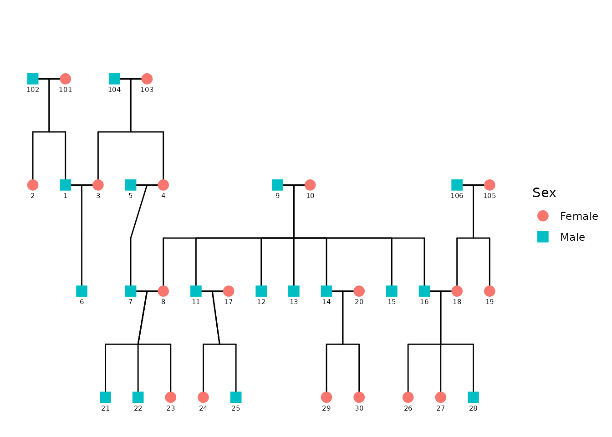
Behind the scenes, ggPedigree():
reshapes the data by family (
ped2fam()),recodes sex (e.g., 0/1/NA) into semantic labels via
recodeSex()extracts a layout grid with
calculateCoordinates()builds connection segments for spouses, siblings, parents, and offspring with
calculateConnections()
The result is returned as a ggplot2 object, which allows
immediate post-processing with standard ggplot syntax.
Customizing Aesthetics
Most appearance settings are managed through a config
list, which allows for fine-tuned customization. If any options are
omitted, they fall back to predefined defaults. For example, we can turn
off sex-based fill color and assign specific colors to connection
segments:
ggPedigree(
potter,
famID = "famID",
personID = "personID",
config = list(
code_male = 1, # Here, 1 = male, 0 = female
sex_color = FALSE,
line_width = 1,
segment_spouse_color = viridis_pal()(5)[1],
segment_sibling_color = viridis_pal()(5)[2],
segment_parent_color = viridis_pal()(5)[3],
segment_offspring_color = viridis_pal()(5)[4],
outline = TRUE,
outline_color = viridis_pal()(5)[5]
)
)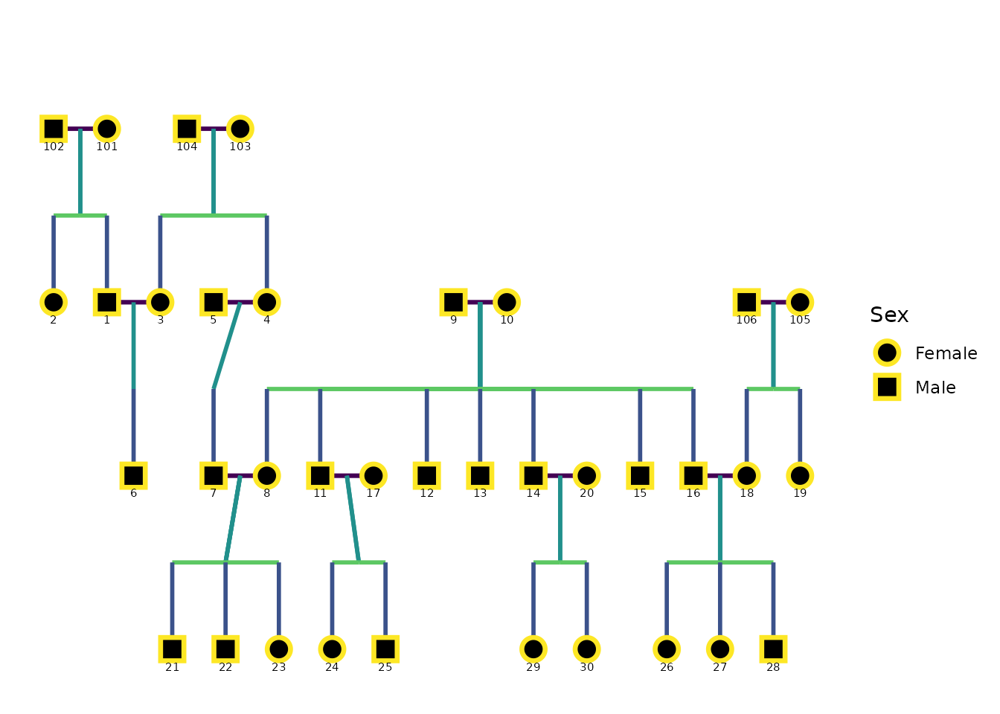
As with any ggplot2 object, further theming and labeling
can be applied using layers or themes. For instance:
ggPedigree(potter,
famID = "famID",
personID = "personID"
) +
theme_bw(base_size = 12)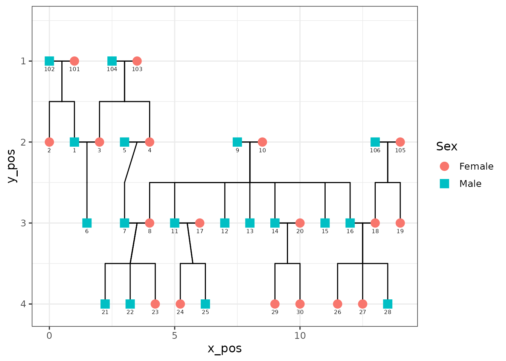
This can be particularly useful for matching house styles in academic publications or removing clutter for presentations.
Labeling Individuals
You can also label individuals in the pedigree using the
label_method argument. The default is
geom_label_repel(), which uses the ggrepel
package to avoid overlapping labels. You can also use
geom_text() for simpler labeling. Other configurable
options include label_col for the label column,
label_text_angle for text rotation,
label_nudge_y for vertical adjustment, and
label_nudge_x for horizontal adjustment.
ggPedigree(
potter,
famID = "famID",
personID = "personID",
config = list(
label_col = "name",
label_text_angle = -45,
label_nudge_y = -.25,
label_nudge_x = 0.45,
label_method = "geom_text",
sex_color = TRUE
)
)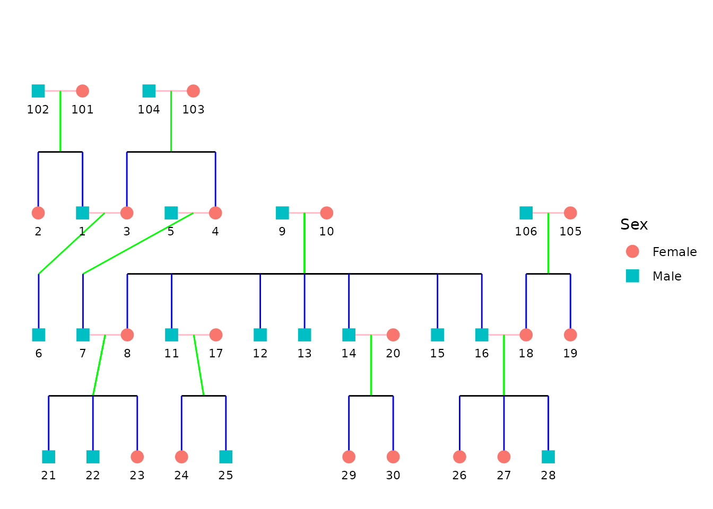
Overlaying Status Information
In many applied settings, pedigrees include binary phenotypes such as
affected/unaffected status. To incorporate this, use the
status_col argument to point to a column containing the
relevant variable.
data("hazard")
p <- ggPedigree(
hazard,
famID = "famID",
personID = "ID",
status_col = "affected",
config = list(
code_male = 0,
sex_color = TRUE,
status_affected_lab = TRUE,
status_unaffected_lab = FALSE,
status_affected_shape = 4
)
)
p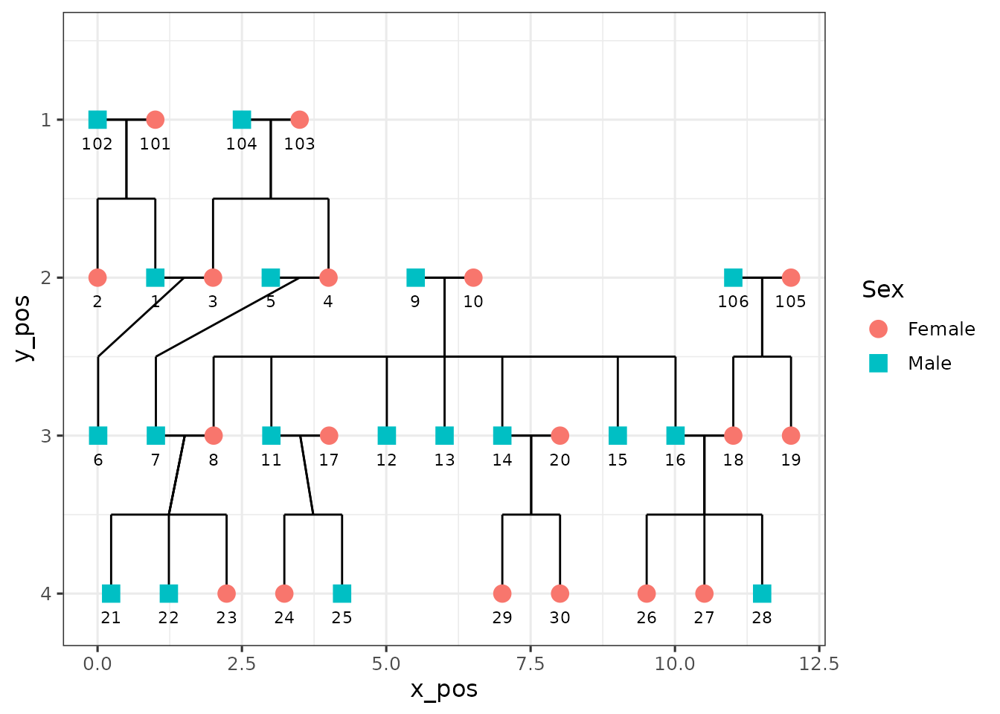
The status_col argument allows you to specify a column
that identifies affected/unaffected individuals. This column should be a
factor or character vector; if not, ggPedigree() will
coerce it.
The behavior differs depending on whether sex_color is
also enabled:
If
sex_color = TRUE, affected individuals are overlaid with a shape (controlled byaffected_shape), preserving the fill color by sex.If
sex_color = FALSE, affected and unaffected individuals are instead colored by status, using a default fill scale.
You can control how values are interpreted via the
affected and unaffected parameters in
config. By default, TRUE is considered
affected and FALSE unaffected.
ggPedigree(
hazard,
famID = "famID",
personID = "ID",
status_col = "affected",
config = list(
code_male = 0,
sex_color = FALSE,
status_affected_lab = TRUE,
status_unaffected_lab = FALSE
)
)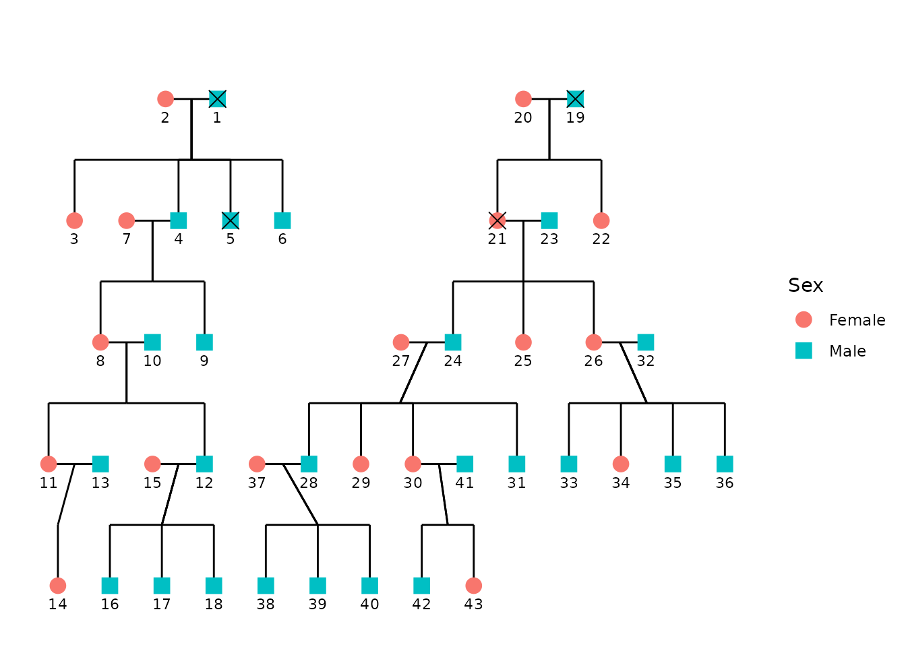
Highlighting Specific Individuals
You can also highlight specific individuals in the pedigree by
creating a new column in your data frame. For example, if you want to
highlight Harry Potter and Dudley Dursley, you can create a new column
called proband and set it to TRUE for those
individuals. You can specify the affected_shape to be a
star shape (8) and use the status_col argument to indicate
the probands.
df <- potter
df <- df %>%
mutate(proband = ifelse(name %in% c("Harry Potter", "Dudley Dursley"), TRUE, FALSE))
ggPedigree(
df,
famID = "famID",
personID = "personID",
status_col = "proband",
config = list(
sex_color = TRUE,
status_affected_lab = TRUE,
status_unaffected_lab = FALSE,
status_affected_shape = 8 # star shape
)
)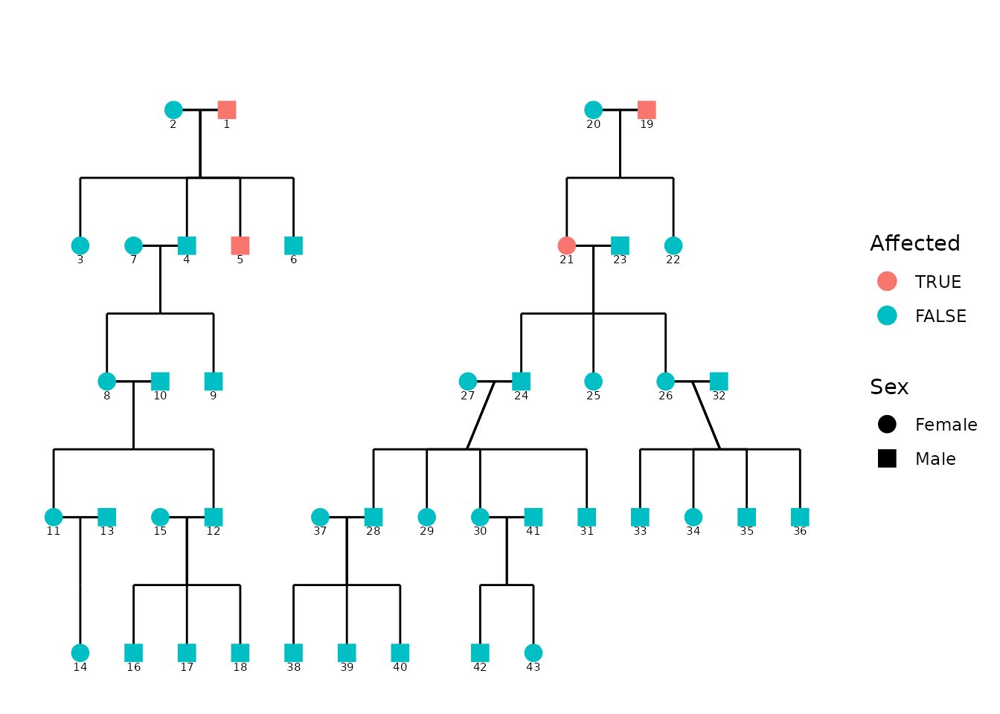
Multiple families in one graphic
If you have multiple families in your data frame, you can use the
facet_wrap() function from ggplot2 to create
separate plots for each family. This is useful if you want to compare
the pedigrees of different families side by side. Note that you can use
scales = "free_x" to allow each family to have its own
x-axis scale.
p +
facet_wrap(~famID, scales = "free_x")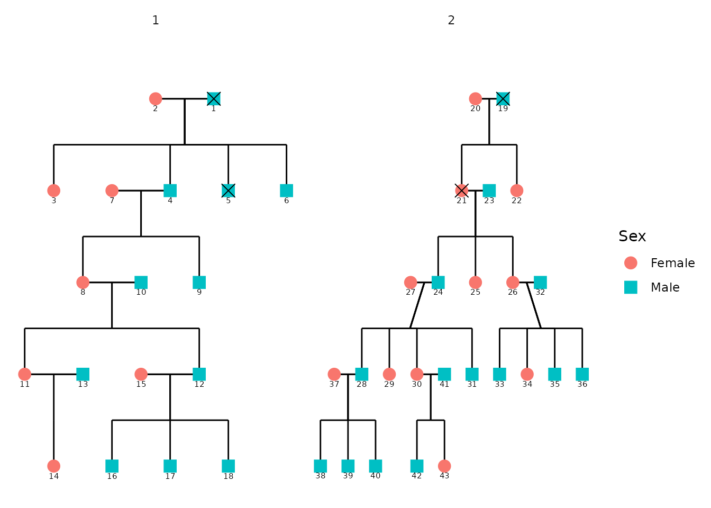
Adjusting Plot Appearance
The layout appearance can be refined using theme()
elements. This doesn’t change the pedigree structure but helps declutter
the visualization.
p +
theme_bw(base_size = 12) +
theme(
panel.grid.major = element_blank(),
panel.grid.minor = element_blank(),
panel.background = element_blank(),
axis.line = element_line(colour = "black"),
axis.text.x = element_blank(),
axis.text.y = element_blank(),
axis.ticks.x = element_blank(),
axis.ticks.y = element_blank(),
axis.title.x = element_blank(),
axis.title.y = element_blank()
) + scale_color_viridis(
discrete = TRUE,
labels = c("Female", "Male", "Unknown")
)
#> Scale for colour is already present.
#> Adding another scale for colour, which will replace the existing scale.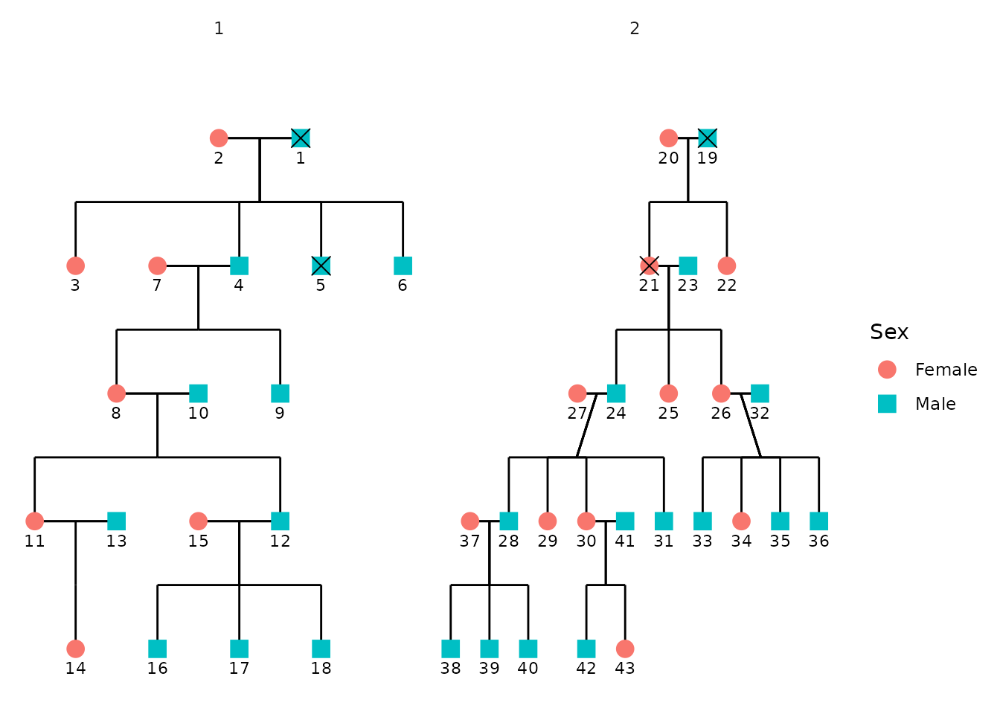
Advanced Example: Large Pedigrees with self-loops
In this section, we demonstrate how to create a more complex pedigree
plot with multiple families. We use the inbreeding dataset
from the BGmisc package, which contains several
multigenerational pedigrees with consanguinity. Note that in these plots
that some individuals may appear in multiple places within the pedigree.
This is common in large pedigrees, especially when there are overlapping
generations or multiple marriages. Here the colors are set to be the
same for all segments, except for self-loops, which are colored
purple.
library(BGmisc) # helper utilities & example data
data("inbreeding")
df <- inbreeding # multigenerational pedigree with consanguinity
# df <- dplyr::filter(df, famID %in% c(5, 7))
p <- ggPedigree(
df,
famID = "famID",
personID = "ID",
status_col = "proband",
# debug = TRUE,
config = list(
code_male = 0,
sex_color = FALSE,
status_affected_lab = TRUE,
status_unaffected_lab = FALSE,
generation_height = 4,
generation_width = 2,
status_affected_shape = 4,
segment_self_color = "purple"
)
)
p + facet_wrap(~famID, scales = "free") #+ scale_color_viridis(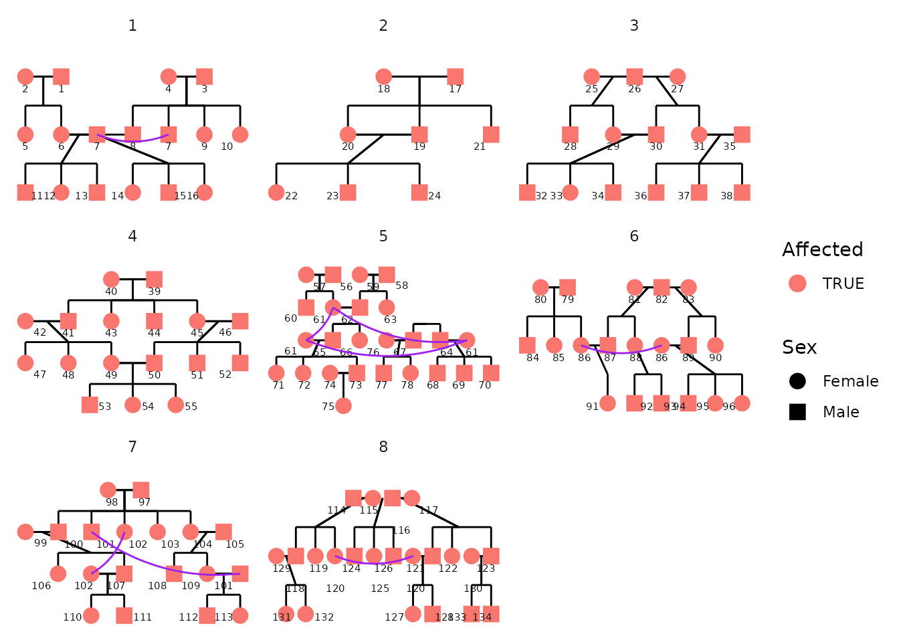
# discrete = TRUE,
# labels = c("TRUE", "FALSE")
# ) + theme_bw(base_size = 14) + guides(colour="none", shape="none")Example: Constructing Custom Pedigrees for Publication
Here we demonstrate how to create a custom pedigree using the
ggpedigree package. The data shown here were generated
using the simulatePedigree() function from the {BGmisc}
package, which is the parent package to {ggpedigree}. These simulated
pedigrees were used in a study evaluating statistical power and
estimation bias for a variance decomposition model that includes
mitochondrial DNA (mtDNA) effects.
The simulation generated thousands of extended pedigree structures varying in depth, sibship size, mating structure, and maternal lineage overlap. The example below shows one of the simulated pedigrees and is the version included in the final manuscript:
Detecting mtDNA effects with an Extended Pedigree Model: An Analysis of Statistical Power and Estimation Bias Xuanyu Lyu, S. Alexandra Burt, Michael D. Hunter, Rachel Good, Sarah L. Carroll, S. Mason Garrison Preprint available at: https://doi.org/10.1101/2024.12.19.629449
The structure includes multiple generations, sibling sets, and overlapping parental lineages, and was chosen to illustrate the complexity of the simulated pedigrees used in the power study.
Preparing the data
Each row represents one individual. Variables include
personID, momID, dadID,
sex, and famID. The proband variable is
included to demonstrate status overlays. For plotting, we normalize
identifiers in family 1 to avoid ID collisions across families.
Click to expand pedigree setup
library(tibble)
library(dplyr)
pedigree_df <- tribble(
~personID, ~momID, ~dadID, ~sex, ~famID,
10011, NA, NA, 0, 1,
10012, NA, NA, 1, 1,
10021, NA, NA, 1, 1,
10022, 10011, 10012, 1, 1,
10023, 10011, 10012, 0, 1,
10024, NA, NA, 0, 1,
10025, NA, NA, 0, 1,
10026, 10011, 10012, 0, 1,
10027, 10011, 10012, 1, 1,
10031, 10023, 10021, 0, 1,
10032, 10023, 10021, 1, 1,
10033, 10023, 10021, 1, 1,
10034, 10023, 10021, 1, 1,
10035, 10023, 10021, 0, 1,
10036, 10024, 10022, 1, 1,
10037, 10024, 10022, 0, 1,
10038, 10025, 10027, 1, 1,
10039, 10025, 10027, 0, 1,
10310, 10025, 10027, 1, 1,
10311, 10025, 10027, 1, 1,
10312, 10025, 10027, 0, 1,
10011, NA, NA, 0, 2,
10012, NA, NA, 1, 2,
10021, NA, NA, 0, 2,
10022, 10011, 10012, 0, 2,
10023, 10011, 10012, 1, 2,
10024, 10011, 10012, 1, 2,
10025, NA, NA, 1, 2,
10026, 10011, 10012, 0, 2,
10027, NA, NA, 1, 2,
10031, 10021, 10023, 1, 2,
10032, 10021, 10023, 0, 2,
10033, 10021, 10023, 1, 2,
10034, 10022, 10025, 0, 2,
10035, 10022, 10025, 0, 2,
10036, 10022, 10025, 1, 2,
10310, 10022, 10025, 1, 2,
10037, 10026, 10027, 0, 2,
10038, 10026, 10027, 0, 2,
10039, 10026, 10027, 0, 2,
10311, 10026, 10027, 1, 2,
10312, 10026, 10027, 1, 2
) %>%
mutate(
cleanpersonID = personID - 10000,
personID = ifelse(famID == 1, personID - 10000, personID),
momID = ifelse(famID == 1 & !is.na(momID), momID - 10000, momID),
dadID = ifelse(famID == 1 & !is.na(dadID), dadID - 10000, dadID),
proband = case_when(
personID %in% c(11, 22, 23, 26, 27, 31, 32, 33, 34, 35) ~ TRUE,
personID %in% c(
10011, 10022, 10022, 10023, 10024, 10026,
10034, 10035, 10036, 10310,
10037, 10038, 10039, 10311,
10312
) ~ TRUE,
TRUE ~ FALSE
)
)Plotting the pedigree
p <- ggPedigree(
pedigree_df,
famID = "famID",
personID = "personID",
status_col = "proband",
# debug = TRUE,
config = list(
code_male = 1,
sex_color = FALSE,
apply_default_scales = FALSE,
label_method = "geom_text",
label_col = "cleanpersonID",
status_affected_lab = TRUE,
status_unaffected_lab = FALSE,
generation_height = 1,
generation_width = 1,
status_affected_shape = 4,
segment_spouse_color = "black",
segment_sibling_color = "black",
segment_parent_color = "black",
segment_offspring_color = "black"
)
)We finish by adjusting the legend and shape scale for visual clarity:
p + scale_shape_manual(
values = c(16, 15, 15),
labels = c("Female", "Male", "Unknown")
) +
guides(shape = "none") + scale_color_viridis(
discrete = TRUE,
labels = c("TRUE", "FALSE"),
name = "Founding MtDNA Line"
) +
facet_wrap(~famID, scales = "free", shrink = TRUE) +
theme(
strip.text = element_blank(),
legend.position = "bottom"
)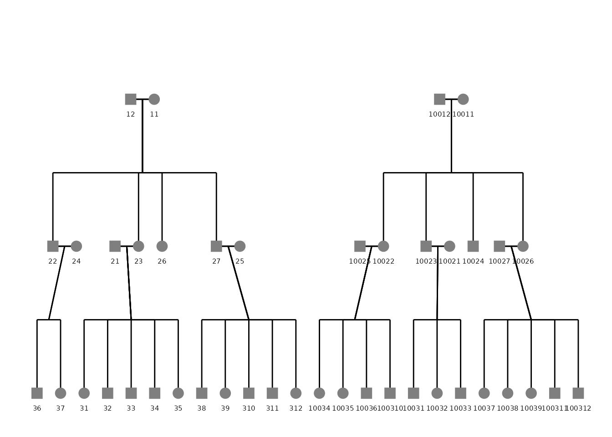